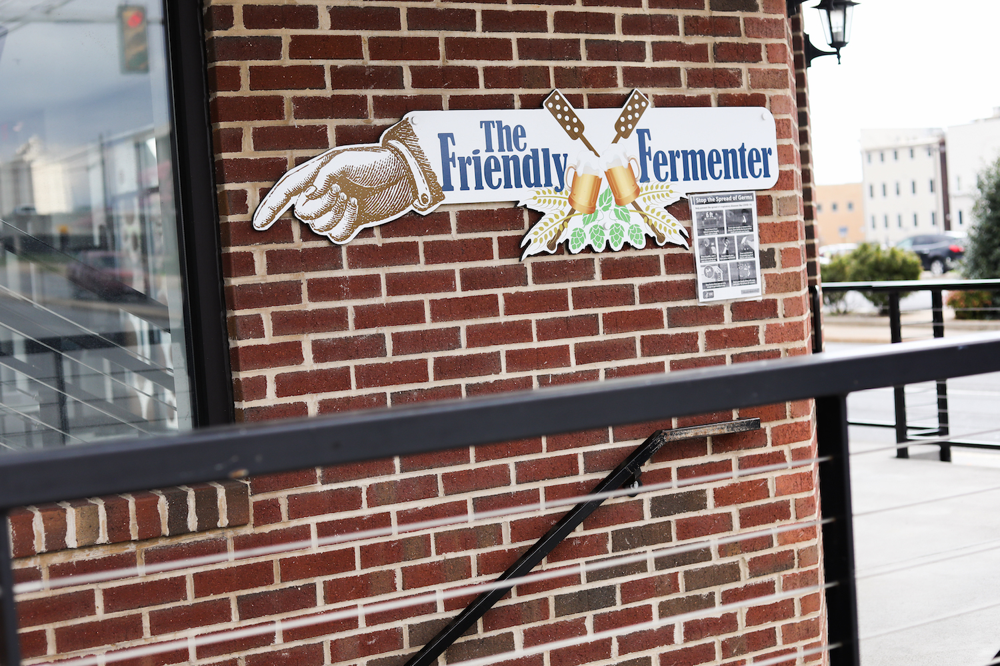
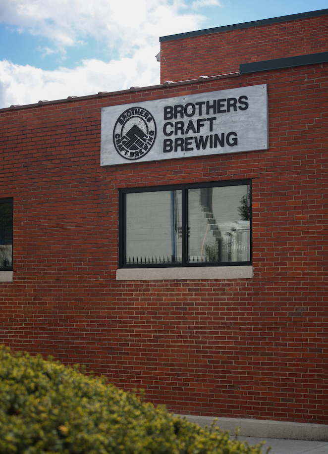
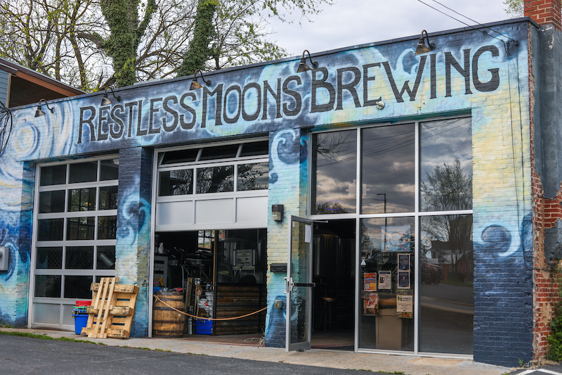

Discover Valley Beer





The Shenandoah Valley is known for its beauty and adventure. The valley’s rolling hills stretch across the western side of Virginia, through towns like Harrisonburg, Lexington, Staunton and more. While the Shenandoah Trail brings tourists to these smaller towns, the COVID-19 pandemic greatly impacted the livelihood of these towns and its citizens, as fewer people were visiting local shops, restaurants and breweries.
The Shenandoah Beerwerks Trail Passport Program encourages people to visit local breweries in the Shenandoah Valley and spend time in these towns exploring shops, museums, historical landmarks and the beauty of the Shenandoah.
While the Shenandoah Trail brings tourists to these smaller towns, the COVID-19 pandemic greatly impacted the livelihood of these towns and its citizens, as fewer people were visiting local shops, restaurants and breweries.
To participate, all one needs to do is visit any eight of the eighteen participating breweries (found here), drink a craft beer at each location, get your passport stamped, mail it in and you’ll receive a free t-shirt. Each brewery will have different events, such as food trucks and live music, that help other small businesses stay afloat.
Harrisonburg, VA. is home to 5 breweries participating in the passport program.
Each brewery provides a unique environment to relax, unwind and enjoy a refreshing craft beer.